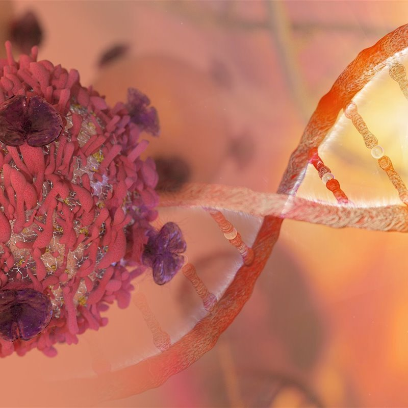
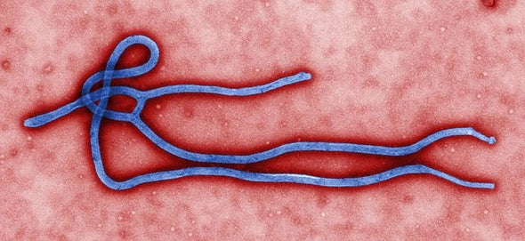
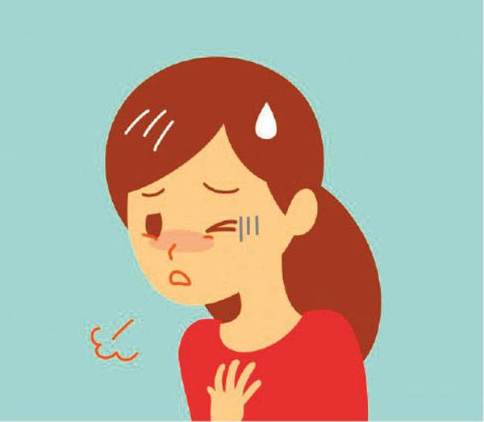

Enfermedades que la ciencia no puede curar
1. Cáncer
Es una de las enfermedades más comunes y peligrosas de nuestros tiempos. Es el crecimiento anormal de células malignas en el organismo. Se cree que 1 de 3 personas es susceptible de padecerla. De acuerdo con la Sociedad Americana del Cáncer, 7,6 millones de personas murieron de cáncer en el mundo durante 2007. A veces, dada la incapacidad actual de la ciencia para curar los tipos de cáncer más agresivos en estados avanzados de evolución, es preferible renunciar al tratamiento curativo y aplicar un tratamiento paliativo que proporcione el menor grado posible de malestar y conduzca a una muerte digna.
A partir de la década de 1990 y con las técnicas terapéuticas disponibles, el cáncer es curable en aproximadamente el 50% de los pacientes diagnosticados.

2. Alzheimer
Enfermedad neurodegenerativa de causas desconocidas. Es una de las más difíciles de tratar y afrontar. Provoca deterioro cognitivo, trastornos en la conducta y pérdida de la memoria. El día internacional del Alzheimer se celebra el 21 de septiembre, fecha elegida por la OMS y la Federación internacional de Alzheimer, en la cual se celebran en diversos países actividades para concienciar y ayudar a prevenir la enfermedad.
Hay diferencias de incidencia dependiendo del sexo, ya que se aprecia un riesgo mayor de padecer la enfermedad en las mujeres, en concreto entre la población mayor de 85 años. Para el año 2010 la Alzheimer’s Disease International ha estimado una prevalencia de demencia del 4,7% a nivel mundial para personas con 60 años o más, representando cifras al alza respecto a varios estudios publicados con anterioridad (10% superiores a las estimadas para The Lancet en 2005).
Se ha probado la eficacia de fármacos anticolinesterásicos que tienen una acción inhibidora de la colinesterasa, la enzima encargada de descomponer la acetilcolina (neurotransmisor que falta en la enfermedad de Alzheimer y que incide sustancialmente en la memoria y otras funciones cognitivas).
3. SIDA
Fue la enfermedad del siglo XX. Causada por el virus de inmunodeficiencia humana (VIH), es una enfermedad infecciosa de consecuencias graves. Se han logrado grandes avances en la medicina pero aún no se conoce la cura. Al menos sí que se ha conseguido que la enfermedad sea crónica. Las probabilidades de una cura son ciertamente remotas, así que los esfuerzos de la investigación actual se centran más en conseguir algún tipo de vacuna que evite nuevos contagios.
4. Lupus
El lupus eritematoso sistémico (LES) es una enfermedad autoinmune. Es impredecible y puede provocar artritis, anemia, erupciones cutáneas, etc. Además, ataca órganos internos específicos como el riñón, los pulmones o hasta el corazón.
El lupus se presenta más comúnmente en asiáticos y africanos y es 9 veces más frecuente en las mujeres que en los hombres.Las primeras manifestaciones de la enfermedad se observan frecuentemente entre los 15 y 44 años de edad. Aunque hasta el momento no hay una cura, los síntomas se tratan principalmente con dosis bajas de corticosteroides, inmunosupresores y antipalúdicos como la hidroxicloroquina.
5. Diabetes
Generada por un desorden metabólico por el cual la persona tiene demasiada azúcar en la sangre y no produce suficiente insulina. Un segundo tipo se da porque el organismo ofrece resistencia a la insulina producida. La diabetes mellitus no es una patología única sino un síndrome, por lo cual esta denominación incluye hoy en día a su vez, a varios tipos de afecciones diferentes pero con una característica común: la hiperglucemia y sus consecuencias.
Para el año 2000, se estimó que alrededor de 171 millones de personas eran diabéticas en el mundo y que llegarán a 370 millones en 2030. Este padecimiento causa diversas complicaciones, dañando frecuentemente a ojos, riñones, nervios y vasos sanguíneos.
El Día Mundial de la Diabetes se conmemora el 14 de noviembre.
La diabetes mellitus era ya conocida antes de la era cristiana. En el papiro de Ebers descubierto en Egipto y que data al siglo XV a. C., ya se describen síntomas que parecen corresponder a la diabetes. Fue Areteo de Capadocia quien, en el siglo II de la era cristiana, le otorgó a esta afección el nombre de diabetes, que significa en griego correr a través, refiriéndose al signo más llamativo que es la eliminación exagerada de agua por el riñón, expresando que el agua entraba y salía del organismo del diabético sin fijarse en él.

6. Ébola
Fiebre hemorrágica transmitida de los primates a los humanos que puede ser mortal. Es originaria de África y tiene una tasa de mortalidad de entre 50 y 90% de los casos. En un lapso de una semana, una erupción, frecuentemente hemorrágica, aparece en todo el cuerpo. Las hemorragias se presentan generalmente desde el tubo gastrointestinal, haciendo que el infectado sangre tanto por la boca como por el recto.
El virus está vivo en África. En el año 1976 murieron alrededor del 85% de los infectados.
El virus del Ébola no tiene cura y ningún tratamiento específico. El tratamiento que se utiliza en la actualidad es mantener la vida de la persona mediante métodos de resucitación (respiración artificial, evitando el RCP pues el virus es contagioso por la saliva) y controlar las hemorragias en la medida de lo posible. En cuanto a una vacuna, se realizan investigaciones, pero éstas se complican porque aún no se conocen todas las proteínas del virus y porque hay sólo cuatro laboratorios equipados para trabajar con un virus como éste.

7. Asma
Enfermedad crónica que puede avanzar en etapas graves. Se produce en los pulmones e inflama las vías respiratorias. Si no se lleva un tratamiento adecuado puede llegar a ser mortal. Aunque se conoce que el asma es una condición causada por una inflamación crónica de las vías aereas, los componentes precisos de esta inflamación están todavía por dilucidar y sus causas son inciertas.
En los últimos veinte años se ha registrado un aumento en su incidencia debido en parte a la contaminación ambiental y las consecuencias de ésta, y en parte al aumento de la población mundial. Por ejemplo, la Organización Mundial de la Salud reportó que un 8% de la población suiza padecía de asma, comparado con solo 2% hace 25-30 años atrás.
8. Poliomielitis
Enfermedad viral que ataca al sistema nervioso y puede llegar a causar parálisis total o parcial. Afecta principalmente a los niños de entre 5 y 10 años.
La enfermedad fue descrita por primera vez por el alemán Jakob Heine en 1840.
La Organización Mundial de la Salud declara que una zona está libre de una enfermedad cuando transcurren tres años sin que se dé ningún caso. En 1994, la OMS consideró a la Región de América (36 países) libre de polio, en el año 2000 lo hizo con la Región del Pacífico (37 países, incluyendo China). En 2002 se declaró a la Región Europea.
La OMS ha declarado que sólo quedan cuatro países en el mundo en que la enfermedad sigue siendo endémica: Nigeria, India, Pakistán y Afganistán. Si se consigue será la tercera enfermedad infecciosa eliminada de la faz de la Tierra. La primera fue la viruela, y la segunda la peste bovina.
9. Gripe
Es muy común y probablemente todos la sufrimos en algún momento. La causa un virus que afecta a las vías respiratorias y que siempre está mutando, lo que hace que solo lo controlemos por un determinado tiempo. Hay tratamientos disponibles que se centran en aliviar los síntomas, y también en ayudar al cuerpo a desarrollar sus defensas.
La gripe alcanza sus picos de mayor prevalencia durante el invierno, y debido a que el hemisferio norte y el hemisferio sur atraviesan esta estación en diferentes momentos existen, de hecho, dos temporadas de gripe cada año: de octubre a abril en el hemisferio norte y de mayo a septiembre en el hemisferio sur. No se sabe la razón exacta de que la gripe aparezca en esas épocas, pero se supone que la razón es que, debido al frío, la gente suele encerrarse en lugares más cerrados y el contacto interpersonal se hace más estrecho.
10. Resfriado común
Es la enfermedad más común. Después del resfriado, el enfermo desarrolla una inmunidad al virus. Sin embargo, debido al gran número de virus que existen, podemos enfermarnos nuevamente. El resfriado común está causado por numerosos virus (principalmente rinovirus, coronavirus y también ciertos ecovirus y coxsackievirus) que infectan el sistema respiratorio superior.
En contra de la creencia popular, la vitamina C no reduce ni previene los síntomas de la enfermedad.
El hábito de fumar extiende la duración de la enfermedad aproximadamente tres días de promedio. El dormir menos de siete horas diarias se ha asociado con un riesgo tres veces mayor de desarrollar una infección cuando tal sujeto está expuesto a un rinovirus, en comparación con los que duermen más de ocho horas por noche.
